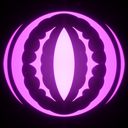
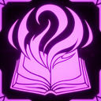
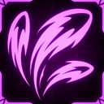
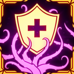
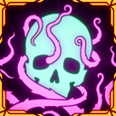
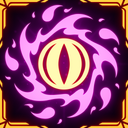

Thaumaturge
人生中，带来愉悦的一切也都会带来痛苦，用来衡量那份愉悦。
伤害敌人会积累 LIFE ENERGY，最高 100%。
技能
被动
伤害敌人会积累 LIFE ENERGY；获得的 LIFE ENERGY 与你造成的伤害成比例。
主技能：Foul Pustule
发射一颗毒液球，造成 30 点毒伤害。
10% 概率施加 POISON 状态效果。
投射物速度为 Xm/s，最大距离 Xm。
副技能：Pain Exchange
花费 25% LIFE ENERGY 治疗自己或一名盟友。
冷却 X 秒。
辅助技能：Soulborne
进入吸收姿态 4 秒，提高移动速度 X%，提高防御 X%，并把受到的任何伤害转化为 LIFE ENERGY。
冷却 10 秒。
职业升级
| 图片 | 稀有度 | 技能 | 说明 | 叠加类型 |
|---|---|---|---|---|
 |
普通 | Thaumaturge: Keen Eye | Pain Exchange 范围 +15 米，每层 +15 米。 | 线性 |
| 普通 | Thaumaturge: Proficiency | Pain Exchange 治疗量 +3 HP；Pain Exchange 冷却 -15%，每层 -15%。 | 线性 | |
 |
稀有 | Thaumaturge: Mastery | 施放 Pain Exchange 所需 LIFE ENERGY -3%，每层 -3%。 | 双曲 |
 |
稀有 | Thaumaturge: Splitshot | 使用 Foul Pustule 时，额外发射一个投射物。投射物散布 +15%，每层 +5%；伤害 -30%，每层 -30%。 | 线性 |
 |
传奇 | Thaumaturge: Doping | Pain Exchange 的目标会获得 ENFORCED 状态效果，持续 X 秒，每层 +X 秒。 | 双曲 |
 |
传奇 | Thaumaturge: Everlife | 获得花费 100% LIFE ENERGY 复活带有 MORTAL CURSE 的玩家的能力。这样做会让你受到 BREACHED 状态效果 42 秒，每层 -7 秒；WEAKENED 状态效果 48 秒，每层 -8 秒；最大 HP -25，直到当前回合结束。LIFE ENERGY 获取 -25%，每层 -25%。 | 线性/双曲 |
 |
传奇 | Thaumaturge: Splashback | 治疗自己或盟友时，施放一次造成毒伤害的爆炸。 | 线性 |